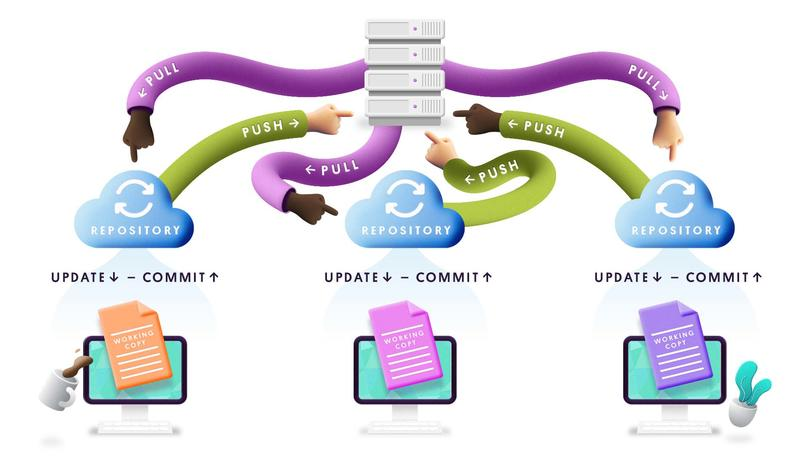

Tema 3. Sistemas De Control De Versiones En La nube
Competencias
Gestiona, planifica, diseña, programa, prueba, implementa y controla las versiones automáticas de los cambios que se
realizan sobre uno o varios ficheros de un servicio en la nube.
3.1 ¿Qué es Y Para Que Sirve?
Control de Versiones
El control de versiones, también conocido como gestión de código fuente, utiliza herramientas para realizar un seguimiento
de las modificaciones o los cambios realizados en el código fuente a lo largo del tiempo. El control de versiones permite
una colaboración rápida y eficiente entre los desarrolladores y a la vez conserva la integridad del código.
Eso permite que los equipos de desarrollo de software trabajen sin temor de que se produzcan conflictos
en el código.
¿Cómo funciona el control de versiones?
En cuanto a su utilidad, los sistemas de control de versiones en la nube ofrecen una serie de beneficios:
Gestión del historial de cambios: Permiten mantener un registro detallado de todas las modificaciones realizadas en los archivos y
proyectos a lo largo del tiempo, lo que facilita la identificación de quién hizo qué cambios, cuándo y por qué.
Colaboración en equipo: Facilitan la colaboración entre miembros de un equipo de trabajo, permitiendo que múltiples personas trabajen en
los mismos archivos y proyectos de forma simultánea y coordinada, incluso desde ubicaciones geográficas distintas.
Control de versiones: Ofrecen herramientas para gestionar diferentes versiones de un proyecto, permitiendo crear ramas de desarrollo independientes
para trabajar en nuevas funcionalidades o correcciones de errores sin afectar la versión principal del proyecto.
Seguridad y respaldo: Almacenamiento seguro de los archivos y proyectos en servidores remotos en la nube,
lo que garantiza la integridad de los datos y ofrece opciones de respaldo automáticas.
Facilidad de acceso: Acceso a los archivos y proyectos desde cualquier lugar y en cualquier
momento a través de una conexión a internet, lo que facilita la colaboración remota y el trabajo flexible.
Integración con otras herramientas: Integración con otras herramientas de desarrollo de software, como sistemas de seguimiento de problemas, integración
continua (CI) y entrega continua (CD), lo que permite automatizar procesos y mejorar la eficiencia del desarrollo.
En resumen, los sistemas de control de versiones en la nube son herramientas fundamentales para el desarrollo de software moderno,
ya que facilitan la colaboración, la gestión del código y la mejora de la productividad de los equipos de desarrollo.

Sistema de Control de Versiones
Ejercicio 1
3.2 Arquitectura interna de GITHUB
La arquitectura interna de GitHub es un tanto compleja, ya que involucra una variedad de componentes y tecnologías
interconectadas para proporcionar sus servicios de control de versiones y desarrollo colaborativo.
Aunque GitHub no divulga públicamente todos los detalles de su arquitectura interna por
razones de seguridad y propiedad intelectual, puedo ofrecerte una visión general basada en la información disponible:
Frontend: GitHub utiliza una arquitectura de frontend basada en JavaScript, HTML y CSS para la interfaz de usuario web.
Esto incluye elementos como el tablero de proyectos, la visualización de archivos y el seguimiento de problemas.
Backend: El backend de GitHub está compuesto por una variedad de servicios y microservicios que gestionan la lógica
empresarial, la autenticación, la autorización y la interacción con la base de datos.
Base de datos: GitHub utiliza una base de datos distribuida para almacenar datos de usuarios, repositorios, problemas,
solicitudes de extracción y otros elementos del sistema. Se ha informado que GitHub emplea principalmente tecnologías
de base de datos NoSQL, como Cassandra, y bases de datos relacionales, como MySQL.
Git y GitD: GitHub se basa en el sistema de control de versiones distribuido Git para gestionar el almacenamiento y
la versión del código fuente. Además, GitHub desarrolló una implementación en Go llamada "GitD" para manejar
las operaciones de Git de manera eficiente en su infraestructura.
API: GitHub proporciona una API pública que permite a los desarrolladores interactuar con la plataforma
para realizar acciones como la creación de repositorios, la gestión de problemas y la obtención de datos de usuarios.
Infraestructura: La infraestructura de GitHub incluye una combinación de servidores físicos y servicios en la nube para
garantizar la escalabilidad, la disponibilidad y el rendimiento del sistema. GitHub utiliza servicios de almacenamiento en la nube,
como Amazon Web Services (AWS), para alojar repositorios y otros datos.
Servicios adicionales: GitHub ofrece una serie de servicios adicionales integrados en su plataforma, como GitHub Actions para la
automatización del flujo de trabajo, GitHub Pages para la publicación de sitios web estáticos y GitHub Packages para
el almacenamiento y gestión de paquetes de software.
En general, la arquitectura interna de GitHub es una combinación de tecnologías y prácticas diseñadas para proporcionar
un servicio robusto, escalable, seguro y de alto rendimiento para millones de desarrolladores en todo el mundo.